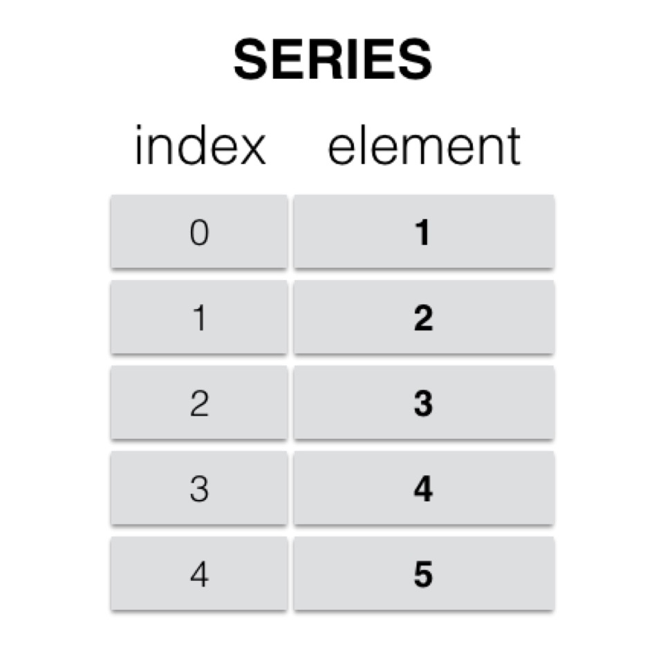
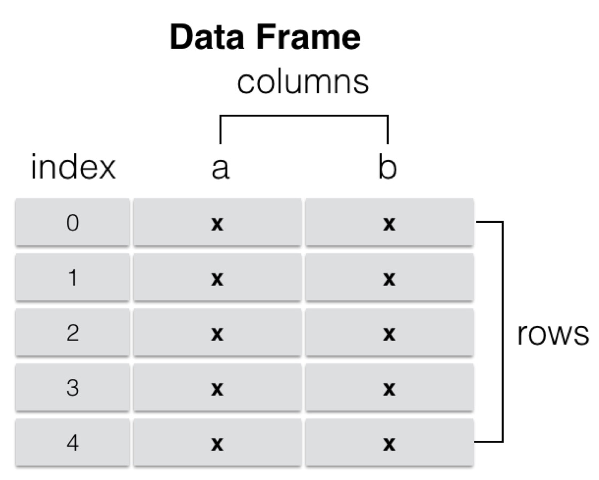

Pandas的数据结构
import pandas as pd
Pandas有两个最主要也是最重要的数据结构： Series 和 DataFrame
Series
Series是一种类似于一维数组的 对象，由一组数据（各种NumPy数据类型）以及一组与之对应的索引（数据标签）组成。
- 类似一维数组的对象
- 由数据和索引组成
- 索引(index)在左，数据(values)在右
- 索引是自动创建的

1. 通过list构建Series
ser_obj = pd.Series(range(10))
示例代码：
# 通过list构建Series
ser_obj = pd.Series(range(10, 20))
print(ser_obj.head(3))
print(ser_obj)
print(type(ser_obj))
运行结果：
0 10
1 11
2 12
dtype: int64
0 10
1 11
2 12
3 13
4 14
5 15
6 16
7 17
8 18
9 19
dtype: int64
<class 'pandas.core.series.Series'>
2. 获取数据和索引
ser_obj.index 和 ser_obj.values
示例代码：
# 获取数据
print(ser_obj.values)
# 获取索引
print(ser_obj.index)
运行结果：
[10 11 12 13 14 15 16 17 18 19]
RangeIndex(start=0, stop=10, step=1)
3. 通过索引获取数据
ser_obj[idx]
示例代码：
#通过索引获取数据
print(ser_obj[0])
print(ser_obj[8])
运行结果：
10
18
4. 索引与数据的对应关系不被运算结果影响
示例代码：
# 索引与数据的对应关系不被运算结果影响
print(ser_obj * 2)
print(ser_obj > 15)
运行结果：
0 20
1 22
2 24
3 26
4 28
5 30
6 32
7 34
8 36
9 38
dtype: int64
0 False
1 False
2 False
3 False
4 False
5 False
6 True
7 True
8 True
9 True
dtype: bool
5. 通过dict构建Series
示例代码：
# 通过dict构建Series
year_data = {2001: 17.8, 2002: 20.1, 2003: 16.5}
ser_obj2 = pd.Series(year_data)
print(ser_obj2.head())
print(ser_obj2.index)
运行结果：
2001 17.8
2002 20.1
2003 16.5
dtype: float64
Int64Index([2001, 2002, 2003], dtype='int64')
name属性
对象名：ser_obj.name
对象索引名：ser_obj.index.name
示例代码：
# name属性
ser_obj2.name = 'temp'
ser_obj2.index.name = 'year'
print(ser_obj2.head())
运行结果：
year
2001 17.8
2002 20.1
2003 16.5
Name: temp, dtype: float64
DataFrame
DataFrame是一个表格型的数据结构，它含有一组有序的列，每列可以是不同类型的值。DataFrame既有行索引也有列索引，它可以被看做是由Series组成的字典（共用同一个索引），数据是以二维结构存放的。
- 类似多维数组/表格数据 (如，excel, R中的data.frame)
- 每列数据可以是不同的类型
- 索引包括列索引和行索引

1. 通过ndarray构建DataFrame
示例代码：
import numpy as np
# 通过ndarray构建DataFrame
array = np.random.randn(5,4)
print(array)
df_obj = pd.DataFrame(array)
print(df_obj.head())
运行结果：
[[ 0.83500594 -1.49290138 -0.53120106 -0.11313932]
[ 0.64629762 -0.36779941 0.08011084 0.60080495]
[-1.23458522 0.33409674 -0.58778195 -0.73610573]
[-1.47651414 0.99400187 0.21001995 -0.90515656]
[ 0.56669419 1.38238348 -0.49099007 1.94484598]]
0 1 2 3
0 0.835006 -1.492901 -0.531201 -0.113139
1 0.646298 -0.367799 0.080111 0.600805
2 -1.234585 0.334097 -0.587782 -0.736106
3 -1.476514 0.994002 0.210020 -0.905157
4 0.566694 1.382383 -0.490990 1.944846
2. 通过dict构建DataFrame
示例代码：
# 通过dict构建DataFrame
dict_data = {'A': 1,
'B': pd.Timestamp('20170426'),
'C': pd.Series(1, index=list(range(4)),dtype='float32'),
'D': np.array([3] * 4,dtype='int32'),
'E': ["Python","Java","C++","C"],
'F': 'ITCast' }
#print dict_data
df_obj2 = pd.DataFrame(dict_data)
print(df_obj2)
运行结果：
A B C D E F
0 1 2017-04-26 1.0 3 Python ITCast
1 1 2017-04-26 1.0 3 Java ITCast
2 1 2017-04-26 1.0 3 C++ ITCast
3 1 2017-04-26 1.0 3 C ITCast
3. 通过列索引获取列数据（Series类型）
df_obj[col_idx] 或 df_obj.col_idx
示例代码：
# 通过列索引获取列数据
print(df_obj2['A'])
print(type(df_obj2['A']))
print(df_obj2.A)
运行结果：
0 1.0
1 1.0
2 1.0
3 1.0
Name: A, dtype: float64
<class 'pandas.core.series.Series'>
0 1.0
1 1.0
2 1.0
3 1.0
Name: A, dtype: float64
4. 增加列数据
df_obj[new_col_idx] = data
类似Python的 dict添加key-value
示例代码：
# 增加列
df_obj2['G'] = df_obj2['D'] + 4
print(df_obj2.head())
运行结果：
A B C D E F G
0 1.0 2017-01-02 1.0 3 Python ITCast 7
1 1.0 2017-01-02 1.0 3 Java ITCast 7
2 1.0 2017-01-02 1.0 3 C++ ITCast 7
3 1.0 2017-01-02 1.0 3 C ITCast 7
5. 删除列
del df_obj[col_idx]
示例代码：
# 删除列
del(df_obj2['G'] )
print(df_obj2.head())
运行结果：
A B C D E F
0 1.0 2017-01-02 1.0 3 Python ITCast
1 1.0 2017-01-02 1.0 3 Java ITCast
2 1.0 2017-01-02 1.0 3 C++ ITCast
3 1.0 2017-01-02 1.0 3 C ITCast